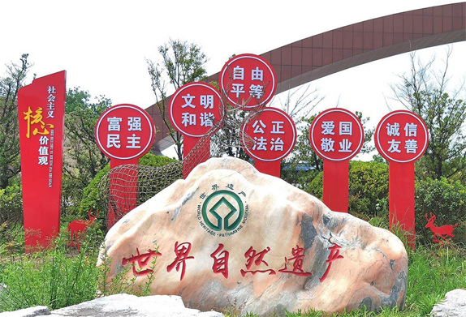

黄海之滨，长三角北翼，一个绚丽多姿的旅游目的地蔚然崛起。它是麋鹿故乡、湿地之都，亦是革命老区、长寿之乡。自然风物与匠心布局辉映，景致之韵显得纷繁灵动；这便是盐城市大丰区。
“到处皆诗境，随时有物华”，作为国家全域旅游示范区创建单位，近年来，大丰围绕全产业链、全要素，有力有序推进旅游产业做优做强，颇具亮点。跟随“全域旅游看江苏”全媒体团，我们一探大丰如何结合自身特色，打造全域旅游高质量“样板”。
依托生态资源，打造全域旅游亮点
大丰拥有国家5A级景区1个，4A级景区6个，高等级数量、质量皆位居江苏各县区前列。可赏花、可观海、可观景色、可知文化，很多来大丰游玩过的旅客，常常感叹：苏北竟然有这样一座令人无法忘怀的旅游城。借助得天独厚的生态资源优势，更凭借难得的开拓意识和创新意识，大丰将旅游业发展融入各类行政主体，潜心激发全域动能，形成“黄海湿地、斗龙港、串场河文化、城市商贸休闲、美丽乡村”五大旅游产业集聚区空间布局，践行“旅游+”，通过形成一张看得见、摸得着、可操作的全域旅游发展蓝图，扎实推进。众多世界级旅游目的地景区铸就了“大丰好玩呢”旅游品牌，这里拥有世界自然遗产盐城大丰黄海湿地公园；拥有五项世界之最，即世界上最大面积的麋鹿自然保护区、世界最多的麋鹿种群数量、世界最完整的麋鹿基因库、世界最大的野生麋鹿种群、世界最大的人工驯养麋鹿种群的中华麋鹿园；世界郁金香最佳景区、“全国郁金香第一花海”——荷兰花海；世界级爱情产业基地——王潮歌《只有爱戏剧幻城》；获得“世界最大的永久性树篱迷宫”和“最大的永久性树篱迷宫路径网”两项吉尼斯世界纪录的梦幻迷宫；中华暗夜星空保护地——野鹿荡；全国乡村旅游重点村——恒北村；国内规模最大的知青文化主题景区——知青农场等。形成了韵致多样的景致“百花园”。
美丽乡村建设，共襄旅游“惠民宴”
共建共享，是推动全域旅游的不二路径，也是全域旅游发展的最终旨归，更是依托旅游产业促进富民事业的核心牵引力。地处大丰区南侧的恒北村，将生态农业与乡村旅游有机结合，围绕“梨园风光、生态宜居、乡村旅游”定位，打造出“恒北恒美、梨缘天下”旅游品牌，带动了当地农民就业创业，实现了民富村强。恒北村连续两年成功举办江苏省乡村旅游节，乡村旅游的蓬勃发展为乡村振兴注入新活力；恒北村被评为全国乡村旅游重点村、江苏省“乡村振兴旅游富民先进村”。
实现共建共享，促进城乡协同。以乡村振兴战略为支点，带动乡村繁荣，也是大丰旅游从一而终的旨归。
打破行业圈层壁垒，助推文旅融合新发展
6月19日，《只有爱》戏剧幻城公演活动在大丰区荷兰花海旅游度假区盛大举行。牵手著名实景演出导演王潮歌，该剧再次回归文学最重要的母题之一的爱情，敏感地捕捉到了当下社会中人们对于爱情的渴望与焦虑，困境与治愈。王潮歌坦言：在中国缺少一个专门讨论爱情的地方，在这里只说爱情，荷兰花海无疑是这种纯粹的最佳承载者。此次公演，突破了王潮歌过往创作的边界，首次推出六大主题剧场，每天超过50部戏剧同时上演，累计演出时长达到了惊人的8.5小时。
牢记社会主义核心价值观，生态文明与精神文明共发展
陶耸给记者们介绍在文旅融合的大背景下，旅行绝不止停留在风景本身，通过《只有爱》戏剧幻城，在打破行业圈层壁垒，推动戏剧艺术从小众走向大众的同时，大丰也积极践行了衍生“大丰好玩呢”旅游品牌，发展“夜经济”，进而开发出一系列全天候旅游业态。陶局长还总结了大丰文化源于水系，全域旅游是源于文化，发于产业，成于共建，高于文明，落地于人民，以人民为本，牢记社会主义核心价值观，依托自身资源优势，不断提升，让人无我有的核心资源，成为全国全域旅游的示范区。
一花一世界，一景一文明。砥砺多年，大丰旅游已经走向成熟，并且在特色发展、旅游富民、国家合作等方面走在了同业前列。有理由相信，依靠融合创新的生态支持，全民共建共享的推动以及文旅融合的深入，大丰全域旅游将迎向更开阔的未来。（通讯员苗慧、摄影王加海）